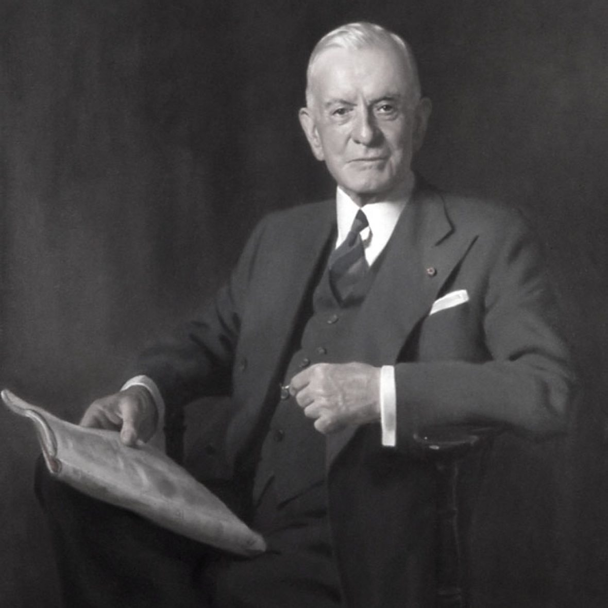

<!DOCTYPE html>
<html>
    <title>
        About Mr Watson
    </title>
</html>
<body>
    <h1>Thomas J Watson</h1>
    
    <p>Thomas J Watson an American Businessman who Served as the chairman and ceo of IBM.Born on February 17,1874 oversaw the company's growth into an international force from 1914-1956.Watson developed IBM's mangement style and corporate culture from John Hnery Patterson's' Training at NCR. </p>
<p>During his time he turned the company into a highly effective selling organaization,based largely on punched card tabulation machines.And the most intresting thing about Mr watson was a self made industrialist and also called the richest person and the greatest salesman when he died in 1956.  </p>
<ul>
    <h2>Some intresting things and the reasons why Thomas J.Watson famous for</h2>
<li>In some german magazine Der spiegal of May 22,1965 stating that IBM boss Thomas Watson had not been intrested in the new machines initially, and when the first commericial calculatiion benemoths appeared on the early i950s.</li>
<li>Evening Tribune writer who wrote "Forrest Shumway chairman of the signal cos, doesn't make predictions.His role model is thomas watson</li>
<li>Wtaon married jeanette kittredge,from a prominent Dayton Ohio railroad familyon April 17,1913. They had two sons ad two daughters</li>
<li>Wtson served as a powerful trustee of columbia university</li>
</ul>
<ol>
<li>As a DemocratWatson was an ardent supporter of roosevelt.</li>
<li>In 1937, Watson was alos president of the international chamber of commerce in 1937</li>
<li>In 1939,he received an honorary degree in Doctor of commerce in 1937;the medal was awarded while the ICC was meeting in germany that year</li>
<li>In the 1940s,watson was on the national executive board of the Boy Scouts of America and served for a time as an international scout commissioner.</li>
</ol>
<table border ="1" cellspacing="1">
    <tr>
        <th>Year</th>
        <th>Achivement</th>
    </tr>
    <tr> <td>1914-1956</td>
        <td>Ceo of IBM</td>
    </tr>
    <tr>
        <td>Born</td>
        <td>17 Feb,1874</td>
    </tr>
    <tr>
        <th>Spouse</th>
        <th>jeanette M.Kittredge</th>
    </tr>
    </table>
    <br>
    <a href="https://en.wikipedia.org/wiki/Thomas_J._Watson">For more reference Wiki Thomas J.Watson</a>
    <a href="https://www.ibm.com/ibm/history/exhibits/chairmen/chairmen_3.html">www.ibm.com</a>
</body>